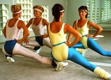
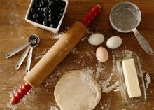

Activities

10 MIN WORKOUTS
Beginner-friendly
- 5 Push-Ups
- 10 Squats
- 16 Plank Taps
- 20 Jumping Jacks
- Rest 45 seconds
Energizing workout
- Repeat 4x:
- Squats — 30 seconds
- Knee Pushups — 30 seconds
- V-Ups — 3 seconds
- Mountain Climbers — 30 seconds
- Rest — 30 seconds
Full-body workout
- Do each move for 2 minutes. Rest 30 seconds between exercises.
- Bodyweight Squats
- Pushups
- Plank With T-Rotation (switch sides after 1 minute)
- Alternating Standing Oblique Crunches

CHOCOLATE CHIP COOKIES
Ingredients
- 225g (1 cup) caster sugar
- 300g (2 cups) plain flour (sifted)
- 200g (1 cup) of butter melted
- 1tsp vanilla extract
- 1tsp of baking powder
- A pinch of salt
- 1 egg
- 100g-200g chocolate or chocolate chips
Recipe
- Add the sugar and melted butter in a bowl and mix together – a wooden spoon is fine, no need for a whisk.
- Sift the flour, baking powder, vanilla and salt together and add to the sugar and butter mixture. Add the chocolate chips at this stage if you’re making chocolate chip cookies.
- Mix together using your hand. Once you get a dough texture, add the egg and knead using your hand again.
- Spread some butter onto a baking tray. Take some of the dough, roll into ball then flatten a little. Keep them on the small side as they spread out during baking. Also, don’t keep biscuits close to each other otherwise they will get stuck together.
- Place in the oven and bake at 160C, gas 3 for 10-20 mins. The bigger the cookies, the longer they’ll take to cook. They’re ready when the edges are a bit golden.

VISION BOARD
What is a vision board?
A vision board is a visualization tool which refers to a board of any sort used to build a collage of words and pictures that represent your goals and dreams. They can be bought from a professional supplier or made with cork or poster boards. By placing visual representations of your goals into one space, you can easily visualize them frequently. Remembering to look at them daily and imagine them as if they have already come true is one of the best ways to activate the Law of Attraction.How to make a vision board
- Create a list of goals you’d like to achieve in the next year
- Collect a bundle of old magazines with beautiful pictures
- Find pictures that represent your goals and inspire you
- Make a collage out of your photos
- Add motivational “affirmation words” that represent how you want to FEEL
- Take a few moments to contemplate your vision board every day